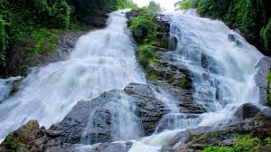

Ashtamudikkayal, Kerala
My journey to Ashtamudikkayal in 2019 was a deeply calming experience. As the houseboat drifted across the vast expanse of the lake, I felt the cool breeze brush against my face. The water shimmered under the evening sun, and the distant calls of birds echoed across the backwaters. I remember savoring freshly cooked Kerala meals onboard, their aroma blending with the earthy scent of the lake. It was a moment of stillness that reminded me to slow down and appreciate life’s simple rhythms.

Visual highlights from the lake:
Chirping of the birds:
Thenmala, Kerala
In 2021, I explored Thenmala, India’s first planned eco-tourism destination. Walking through the lush forest trails, I was surrounded by the sound of rustling leaves and the gentle hum of insects. The air was fresh and cool, carrying the scent of damp earth after a light drizzle. Thenmala wasn’t just a trip; it was a lesson in how eco-tourism can inspire us to live more sustainably.

Canopy Trees:
Jungle Rain and Birds: